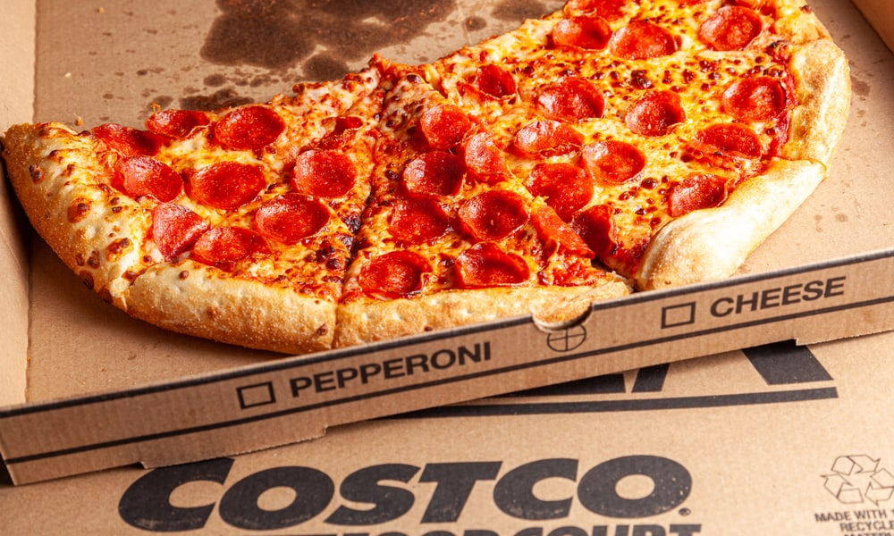

Costco Pizza

Description
This pizza recipe can't be beat! So easy and only a small number of ingredients, with very few steps!
Ingredients
- Computer
- Phone
- Car (or your own two feet, if you're close enough to walk)
Steps
- Using the (1) Computer, go to https://www.costco.com/, and hover your mouse over "Find a Warehouse" at the top of the screen
- Enter your City, State, or Zip into the search bar, and check the box for "Food Court". Click the "Find a Warehouse" button.
- Use the map on the next page to find the Costco warehouse closest to you. (Optional) Using your phone, call the number listed for the Costco location you chose and place an order ahead of time.
- Using your Car (or your feet if you're walking), travel to the Costco and go inside. Find the food court. Go to the kiosk and pay for your pizza.
- Wait for your pizza. If you didn't call ahead in Step 2, you will have to wait slightly longer, but it's usually only a few minutes either way.
- With your fresh Costco pizza in head, return home and enjoy!